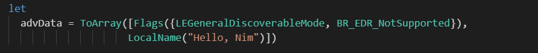
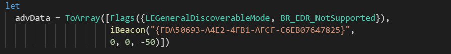
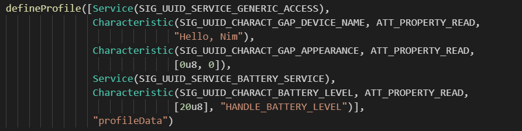
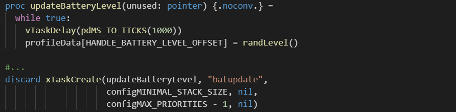
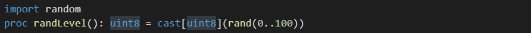

INGChips 为客户提供易用的 SDK，帮助客户便捷、高效地开发蓝牙产品。

SDK 2.0 引入了一种新的编程语言：Nim。Nim 是一种静态编译型系统编程语言， 结合了 Python、Lisp 等语言的一些特性，高效（Efficient）、高能（Expressive）、 高颜值（Elegant）。
使用 Nim 开发的项目编译时先由 Nim 编译器将 nim 源代码转译成 C 代码，
然后通过 Gnu 工具链将这些转换出来的代码连同 SDK 提供
的 C 代码一起编译、链接得到可在 ING918xx 上运行的程序。整个流程如图所示。

本文将展示 Nim 相对各大友商基于 C 语言的 SDK 在一些方面具有“碾压”般的优势。
Nim 环境配置
参照官方说明可以很方便地安装 Nim 以及 Gnu 工具链。对于 Windows 10 系统，需要安装 Windows 版本， 不要在 WSL 里安装 Linux 版本。
打开 ingWizard 的 Options 窗口，把 Gnu 工具链 和 Nim 两个页面上的信息补充完整。
推荐 Visual Studio Code 作为代码编辑器，它的 Nim 插件可以实现语法高亮、补全、查错等功能。
创建第一个 Nim 项目
打开 ingWizard 的项目向导，在 Develpment Tool 页面选择 Nim + Gnu Toolchain。
与 C 项目一样，ingWizard 图形界面也可以为 Nim 项目创建蓝牙广播和 GATT Profile 数据。
SDK 为 Nim 项目提供了一个名为 btdatabuilder 的模块，这个模块使用了 Nim 的元编程特性，
可以通过代码便捷地创建这些数据。为演示该模块的使用，我们选择使用代码创建蓝牙广播和
GATT Profile 数据：

一直点击“Next”直至新项目创建完成。用 Visual Studio Code 或者其它编辑器打开新项目里的
profile.nim 文件。
创建广播数据
-
示例 1: 将设备命名为 “Hello, Nim”

-
示例 2：创建 iBeacon（微信摇一摇）

注：上述 Major/Minor 为0，仅供演示用。
上面的代码在编译时会被 Nim 内置的虚拟机执行，得出广播数据（一个数组）并存储在 advData 里。
友商对比
让我们看一下使用友商们的 SDK。
-
N 厂
依靠代码在运行时生成：
- 构造一个数组，写入 iBeacon 数据
- 把广播的数据项填写到
ble_advdata_t - 调用
ble_advdata_encode函数生成完整的广播数据（也即上面例子里的advData）
这些流程跑下来，得到的广播数据是固定不变的。 这样一次次地在芯片上执行相同的处理、得到相同的数据，既耗时间又耗存储空间。
-
T 厂
const u8 tbl_advData[] = { 0x05, 0x09, 'k', 'H', 'I', 'D', 0x02, 0x01, 0x05 0x03, 0x19, 0x80, 0x01, 0x05, 0x02, 0x12, 0x18, 0x0F, 0x18, };T 厂使用了“刀耕火种”技能。
创建 Profile 数据

上面的代码由 Nim 转译为 C 后，完整的 Profile 数据被存储在 profileData 里，
并用常量HANDLE_BATTERY_LEVEL 表示电池电量指示属性的句柄（handle），
用常量 HANDLE_BATTERY_LEVEL_OFFSET 表示电量数值在 profileData 里的字节偏移。
这里编译时生成的变量、常量在代码里可以“正常”使用。比如创建一个任务周期性地随机修改电量数值：

在 Nim 项目里至少有三种产生伪随机数的方法。
-
使用
C标准库提供的伪随机数函数 -
使用
Nim内置的伪随机数函数
-
临时写一个
显而易见，三种方法实现起来都很简单。
友商对比
同样对比一下友商们的 SDK 里如何创建 Profile。
-
N 厂
同样是运行时生成，需要绕来绕去地调用
xxx_service_add、xxx_characteristics_add等一系列函数。 -
T 厂
ATT 句柄（handle）和 Profile 数据分开定义，依靠人力保证两者的一致性。
编译
ingWizard 自动为项目创建了 makefile，只需要在输入 make 命令即可完成所有编译步骤。
makefile 文件里只包含了项目的核心设置，内容简洁，便于修改。
为什么引入 Nim？
-
元编程
使用元编程可以在编译时生成广播、Profile 等数据，在运行时 0 开销。对于低功耗嵌入式系统， 可以缩短启动时间、降低功耗、减小空间占用。
-
强类型
相对 C 而言，Nim 是一种强类型的语言，可以辅助开发人员编写更安全的代码。
-
与 C 互通
SDK 中以 C 形式提供的 API 可以通过工具完整地导入 Nim 项目为其所用。
我们认为 Nim 在嵌入式领域有很大的应用前景。未来 SDK 仍将以 C/C++ 为核心语言， Nim 将作为与 C/C++ 平行的开发语言，可以使用 SDK 为 C/C++ 提供的所有模块、接口。